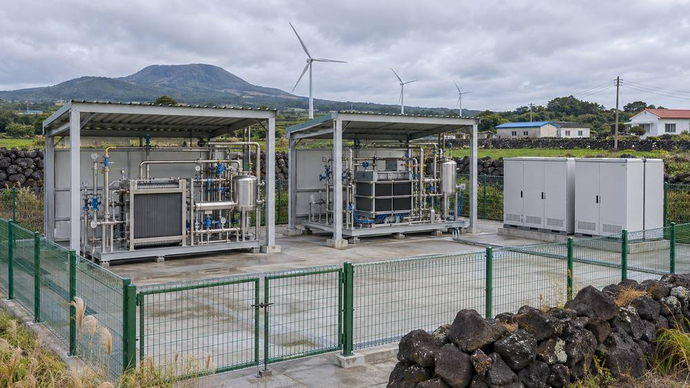
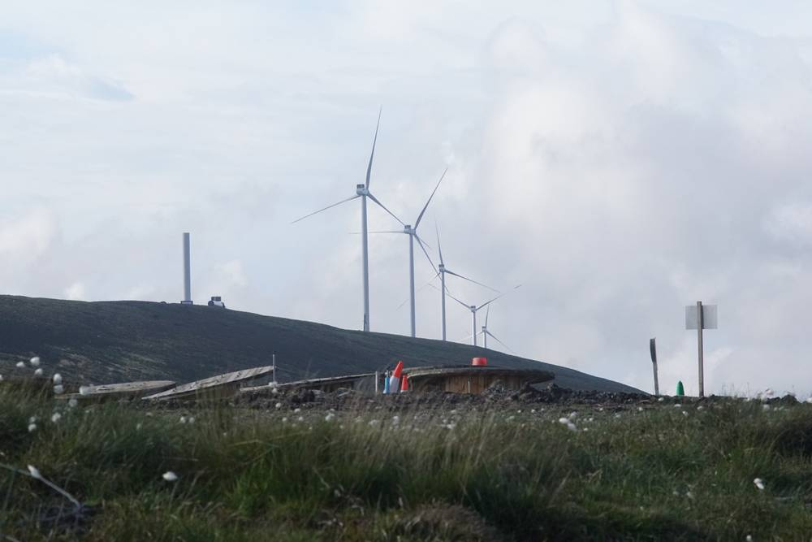

산업·경제
[부산형 햇빛소득②] 기업 PPA로는 수익률 2%대…"부산시가 전기 사서 배출권 비용 아끼자"
부산연구원 "고정가격 상한 150원 아래, 주차장 태양광은 145원에 팔면 원금도 못 건져" / 부산시 배출권 구매비 7억 원대서 20억 원 넘게…시가 PPA 구매자 되면 IRR 5% 넘어 / 전력거래소 "직접 PPA 300kW 이상 고압 요건 완화 검토" / 자유토론서 "협동조합에 맡겨 달라"…선로 1.4km·부서 칸막이 지적

전주시 2030년까지 시설 투자에 시비 1조7,604억 원 필요…시의회서 '시민참여 공공투자 펀드' 제안
김인철 의원 "공공 유휴부지 발전시설 등 수입 안정적인 사업부터"…서울은 태양광 82억5,000만 원·연료전지 114억 원 시민 투자 모아

강원 접경 4개 군 "군 유휴부지·햇빛·물로 에너지 연대"…영농형 태양광 군민펀드·발전 수익 기본소득 제안
철원·화천·양구·인제 정책포럼…"철원 농지 60%가 외지인 소유, 발전 수익 밖으로 샌다", 철원 태양광·화천 양수발전 잇는 '접경지역 에너지 협력권' 구상

국회 정무위, 17일 금융법안 심사 재개…해킹 과징금·워크아웃법 연장 연내 처리 주목
여야, 소위 안건 협의 중…예금자보호법 특별계정 1년 연장·청년 보금자리론 위한 주금공법도 대기

제주 이창흠 초대 기후경제부지사 "풍력·햇빛 이익을 도민 소득으로"…주민참여형 사업을 도민펀드로 넓힌다
2035년 탄소중립 목표, 약 2GW 추자해상풍력 최우선…신규 발전사업 주민 채권·펀드 투자, 공유화기금은 취약계층·공동체 재원

제주에너지공사, 남는 풍력 전기를 수소로…ALK·PEM 수전해와 ESS 묶은 실증 착수
11개 기관 참여 국가 연구개발과제 착수회의…2028년 통합 실증운전, 출력제어 시간대엔 수전해 늘리는 '플러스DR' 모의 참여

美 미네소타 전력협동조합 크로우윙파워, 조합원에 약 300만 달러 돌려줘…11월 전기요금에서 차감
2010년분 출자배당 111만1,000달러에 도매 협동조합이 배정한 1992~1998년분 182만7,000달러 더해

석유 최고가격 5회 연속 동결…휘발유 1,784원·경유 1,773원 12월 11일까지
정부 "물가 안정 효과 확인"…정유사 손실 보전에 예비비 4조2,000억 원, 종료 시점은 미정

美 테네시 태양광 단지에 소 15마리 방목…풀베기 75% 맡기고 설비 보강비는 3%만 더 들어
실리콘랜치 3.25MW 크리스티애나 단지, 패널 기울기 줄이는 '방목 모드'로 소와 설비 함께…최대 300MW 사업으로 넓힐 곳 찾는 중

캐나다 캘거리 전기·가스 판매사, 이익 100%를 지역 성소수자 단체에…"요금이 공동체 기금이 된다"
사회적기업 Q-TILITIES, 대표는 월급 안 받고 5년 안에 10만 달러 이상 환원 목표

美 애너하임 시영 전력, 태양광 150MW·배터리 138.5MW 20년 구매 계약…약 9억5,500만 달러
시의회 7대0 승인, 약 7만5,000가구분…배터리 성능 3개월 연속 90% 밑돌면 대금 안 내

함평군, 빛그린국가산단 'RE100 시범산단'·재생에너지 자립도시 1호 추진…함평 쪽 330만㎡로 확장
"인근 태양광·풍력으로 산단 전력을"…근거 특별법은 아직 논의 단계

태양광 발전소 3만9,312곳 몰린 전북, 지역별 전력도매가격 차등화에 '비상'…발전단체 공대위 25일 결의대회
전국 발전소의 17.7%·설비 4,984MW…모의분석서 수도권·비수도권 ㎾h당 10.6원 차이, 27일 개정위원회 통과 땐 법적 대응

강원도 108억 원 현물출자한 대관령 풍력단지, 연 순이익 3억 원 그쳐…도의회 행감서 "경제성·주민 피해 다시 따져야"
강원개발공사 운영 단지 예상 매출 21억 원…유지보수·인건비 오르면 수익 더 줄 수도, 소음·저주파·그림자 깜박임 등 사회적 비용도 거론

SH 임대단지 지붕 태양광, 낮에 남는 전기는 관리비로 돌아오나…오중석 서울시의원 "요금상계 현황 공개하고 12월 말까지 전환 계획 내라"
LH가 세종 행복주택 238가구에서 공동주택 첫 요금상계 시작하자 같은 ZEB 3등급 고덕 온빛채 697가구 사례 따져…상계 안 되는 단지는 이유 목록부터

美 위스콘신 전기요금, 민간 전력회사 2020년 뒤 29% 올라…공영 14%·협동조합 15%의 두 배
연 8,000kWh 쓰는 가구 기준 민간 1,513달러·협동조합 1,313달러·시 공영 1,025달러

이탈리아 토르토나에 과학기술단지 주도 재생에너지 공동체…"참여자 전기요금 25~40% 절감"
첫 발전소 약 200kW로 시작해 750kW까지…토르토나 일대 18개 코무네 대상, 2026년 말 가동 목표

영국 셰틀랜드 "버려지는 풍력 전기로 섬 주민 요금 낮춘다"…의회 주도 '셰틀랜드 공동체 전력 프로젝트' 시동
가구 40%가 에너지빈곤인데 터빈 103기 바이킹 풍력은 송전 막혀 멈추기도…GB에너지·오프젬·SSE 등 실무단 참여, 2028년부터 시범사업 목표

뉴욕시에 '시 소유 재생에너지 개발공사' 세우자…시민단체 보고서 "공공 배터리 200MW만 깔아도 요금 연 1억7,000만 달러 절감"
기후·공공전력 단체 3곳 'PowerNYC' 제안…학교·병원·공공주택 지붕에 태양광·저장장치·지역 열망 직접 개발, 수익 다시 투자하는 자립형 공공 개발자

독일 쾰른 오센도르프, 에너지협동조합과 주택협동조합이 435가구에 세입자 태양광…저장장치 670kWh 붙여 전기요금 10% 싸게
건물 55동 지붕에 750kW, 단지 전기의 절반을 지붕에서…협동조합 "2027년 EEG 개정되면 작은 세입자 태양광은 못 짓는다"

BHESCo, 이스트본 전역으로 '태양광 동네' 사업 확대…전기요금 최대 25% 낮추기 목표
주택 소유자·세입자·지역 사업장 모두 대상…오프젬 에너지 보상 기금으로 운영

용인시정연구원 "반도체 RE100 수요를 시민 소득으로"…시민 투자·주민 참여·공공자산 태양광 담은 이익공유 모델 제안
이슈리포트 'YRI Insight 119호'…발전 수익 공유, 시공·유지관리 주민 참여, 정책금융·시민투자 연계, 인접 시군과 광역 협력 등 5가지 방안

신협, 시민 태양광에서 해상풍력·햇빛소득마을까지 재생에너지 금융 넓힌다…마을 발전시설 자금 최대 85% 대출
안산시민햇빛발전협동조합 발전소 60곳 짓는 데 힘 보탠 경험 살려 고창 해상풍력 1,000억 원 연계대출 참여, 에너지공단 이차보전으로 마을 이자 부담 덜어

産業・経済
【釜山型太陽光所得②】企業PPAでは収益率2%台…「釜山市が電気を買い、排出権費用を節約」
釜山研究院「固定価格の上限150ウォン未満、駐車場の太陽光は145ウォンで売れば元本も回収できない」 / 釜山市の排出権購入費は7億ウォン台から20億ウォン超に…市がPPA購入者になれば内部収益率5%超 / 電力取引所「直接PPAの300kW以上高圧要件の緩和を検討」 / 自由討論で「協同組合に任せて」…送電線1.4km・部署の縦割りを指摘
江原道の境界地域4郡「軍の遊休地・日差し・水でエネルギー連帯を」…営農型太陽光の郡民ファンド、発電収益を基本所得に
鉄原・華川・楊口・麟蹄の政策フォーラム…「鉄原の農地の6割は外部所有、発電収益が外へ流出」、鉄原の太陽光と華川の揚水発電を結ぶ「境界地域エネルギー協力圏」構想
済州のイ・チャンフム初代気候経済副知事「風と日差しの利益を道民の所得に」…住民参加型事業を道民ファンドへ拡大
2035年炭素中立目標、約2GWの楸子洋上風力を最優先…新規発電事業に住民が債券・ファンドで投資、共有化基金は脆弱層・共同体の財源に
済州エネルギー公社、余った風力の電気を水素に…ALK・PEM水電解とESSを組み合わせた実証に着手
11機関が参加する国家研究開発課題のキックオフ会議…2028年に統合実証運転、出力制御の時間帯は水電解を増やす「プラスDR」に模擬参加
米ミネソタの電力協同組合クロウ・ウィング・パワー、組合員に約300万ドルを還元…11月の電気料金から差し引き
2010年分の出資配当111万1,000ドルに、卸売協同組合が割り当てた1992～1998年分182万7,000ドルを加える
米テネシー州の太陽光発電所で牛15頭を放牧…草刈りの75%を任せ、設備補強費は3%増のみ
シリコンランチの3.25MWクリスチアナ発電所、パネルの傾きを抑える「放牧モード」で牛と設備が共存…最大300MW事業への拡大先を探す
カナダ・カルガリーの電気・ガス小売会社、利益の100％を地域の性的少数者団体へ…「料金が共同体の基金に」
社会的企業Q-TILITIES、代表は無給で5年以内に10万ドル以上の還元目標
米アナハイム市営電力、太陽光150MW・蓄電池138.5MWの20年購入契約…約9億5,500万ドル
市議会が7対0で承認、約7万5,000世帯分…蓄電池性能が3か月連続90%を下回れば代金支払わず
太陽光発電所3万9,312カ所が集中する全北、地域別の電力卸売価格差別化に「非常事態」…発電団体の共同対策委が25日に決起大会
全国の発電所の17.7％・設備4,984MW…模擬分析で首都圏と非首都圏にkWh当たり10.6ウォンの差、27日の改正委員会で通過すれば法的対応
江原道が108億ウォンを現物出資した大関嶺風力団地、年間純利益3億ウォンにとどまる…道議会の監査で「経済性と住民被害を改めて検証せよ」
江原開発公社が運営する団地の予想売上は21億ウォン…維持補修費や人件費が上がれば収益はさらに減る恐れ、騒音・低周波・シャドーフリッカーなど社会的費用も指摘
SH賃貸団地の屋根の太陽光、昼に余った電気は管理費に戻るのか…オ・ジュンソク・ソウル市議「料金相殺の現況を公開し、12月末までに転換計画を」
LHが世宗の幸福住宅238世帯で共同住宅初の料金相殺を始めたのを受け、同じZEB3等級の高徳オンビッチェ697世帯の事例を追及…相殺できない団地は理由のリストから
米ウィスコンシン州の電気料金、民間電力会社は2020年以降29%上昇…公営14%・協同組合15%の2倍
年8,000kWh使う世帯で民間1,513ドル・協同組合1,313ドル・市営1,025ドル
イタリア・トルトーナに科学技術パーク主導の再エネ共同体…「参加者の電気料金を25～40%削減」
最初の発電所は約200kWで始め750kWまで拡大…トルトーナ一帯の18のコムーネが対象、2026年末の稼働目標
英シェトランド「捨てられる風力の電気で島民の電気料金を下げる」…議会主導の「シェトランド・コミュニティ電力プロジェクト」始動
世帯の40%がエネルギー貧困なのに、103基のバイキング風力は送電が詰まり停止することも…GBエナジー・Ofgem・SSEなどが作業部会に参加、2028年から試行事業を目標
ニューヨーク市に「市営の再エネ開発公社」を…市民団体の報告書「公共蓄電池200MWだけで料金を年1億7,000万ドル削減」
気候・公共電力の3団体が「PowerNYC」を提案…学校・病院・公営住宅の屋根に太陽光・蓄電池・地域熱網を直接開発し、収益を再投資する自立型の公共開発者
独ケルン・オッセンドルフ、エネルギー協同組合と住宅協同組合が435世帯に賃借人向け太陽光…蓄電池670kWhで電気料金を約10%安く
建物55棟の屋根に750kW、団地の電力の約半分を屋根から…協同組合「2027年のEEG改正で小規模な賃借人電力は建てられなくなる」
BHESCo、イーストボーン全域へ「ソーラー・パワード・コミュニティーズ」を拡大…電気料金を最大25%安くすることを目標に
持ち家世帯・賃借人・地域の事業所が対象…オフジェムのエネルギー補償基金で運営
龍仁市政研究院「半導体のRE100需要を市民の所得に」…市民投資・住民参加・公共資産太陽光を盛り込んだ利益共有モデルを提案
イシューリポート「YRI Insight 119号」…発電収益の共有、施工・保守への住民参加、政策金融と市民投資の連携、隣接市郡との広域協力など5つの方策
韓国の信用協同組合「信協」、市民太陽光から洋上風力・「日差し所得村」まで再エネ金融を拡大…村の発電施設資金を最大85％融資
安山市民太陽光発電協同組合の発電所60カ所建設を支えた経験を生かし、高敞洋上風力に1,000億ウォンの連携融資、エネルギー公団の利子補給で村の負担軽減
产业·经济
【釜山型阳光收入②】仅靠企业PPA收益率2%左右…"由釜山市购电，节省排放权费用"
釜山研究院："固定价格上限低于150韩元，停车场光伏以145韩元出售连本金都收不回" / 釜山市排放权购买费从7亿增至20亿韩元以上…市政府成为PPA买方则内部收益率超过5% / 电力交易所："研究放宽直接PPA的300kW以上高压条件" / 自由讨论："交给合作社吧"…指出1.4公里线路缺口与部门壁垒
江原道边境四郡：以军队闲置用地、阳光和水资源结成“能源联盟”…提议设立农光互补郡民基金、发电收益转为基本收入
铁原、华川、杨口、麟蹄政策论坛…“铁原60%农地归外地人所有，发电收益外流”，提出连接铁原光伏与华川抽水蓄能的“边境地区能源合作圈”
济州首任气候经济副知事李昌钦：“让风和阳光的收益成为道民收入”…把居民参与型项目扩大为道民基金
以2035年碳中和为目标，优先推进约2吉瓦楸子海上风电…新发电项目由居民以债券、基金投资，共享基金用于弱势群体和社区
美国田纳西光伏电站放牧15头牛……承担75%除草工作，设备加固成本仅增加3%
硅牧场公司3.25兆瓦克里斯蒂安娜电站以限制组件倾角的"放牧模式"让牛与设备共存……正寻找可推广至最大300兆瓦项目的场址
全北集中了39,312座太阳能电站，电力批发价格分区差别化令其“告急”——发电团体联合对策委25日举行誓师大会
占全国电站17.7%、装机4,984MW；模拟分析显示首都圈与非首都圈每千瓦时相差10.6韩元，若27日修订委员会通过将诉诸法律
江原道以108亿韩元实物出资的大关岭风电场年净利润仅3亿韩元…道议会监察："重新审视经济性和居民受害"
江原开发公社运营的风电场预计年销售额21亿韩元…维修费和人工成本上涨可能进一步压缩利润，噪音、低频、阴影闪烁等社会成本也被提及
SH租赁小区屋顶太阳能白天余电能否抵扣物业费…首尔市议员吴仲锡："公开电费抵扣现状，12月底前提交转换计划"
LH在世宗幸福住宅238户启动公寓首例电费抵扣后，追问同为ZEB三级的高德Onbitche 697户…无法抵扣的小区先列出原因清单
美国威斯康星州电价：民营电力公司2020年后上涨29%，是公营14%、合作社15%的两倍
以年用电8,000kWh的家庭计算，民营1,513美元、合作社1,313美元、市营1,025美元
英国设得兰"用弃风电力降低岛民电费"…议会主导的"设得兰社区电力项目"启动
40%家庭陷入能源贫困，拥有103台风机的维京风电场却因输电受阻时常停机…GB能源、Ofgem、SSE等加入工作组，目标2028年起开展试点
为纽约市设立"市属可再生能源开发公司"…民间团体报告称"仅建200兆瓦公共电池即可每年节省电费1.7亿美元"
三家气候与公共电力团体提出"PowerNYC"…在学校、医院和公共住房屋顶直接开发光伏、储能和区域热网，以收益再投资的自立型公共开发商
德国科隆奥森多夫，能源合作社与住房合作社为435户租户建屋顶光伏…配670kWh储能，电费便宜约10%
55栋楼屋顶共750kW，小区约一半用电来自屋顶…合作社警告：2027年EEG修订后小型租户电力项目将无法建设
龙仁市政研究院：“把半导体RE100需求转化为市民收入”…提出包含市民投资、居民参与和公共资产光伏的利益共享模式
专题报告《YRI Insight 第119期》…提出发电收益共享、居民参与施工与运维、政策性金融与市民投资联动、与邻近市郡广域合作等5项方案
韩国信用合作社“信协”将可再生能源金融从市民光伏扩展至海上风电和“阳光收入村”…村级发电设施资金最高可贷85%
凭借支持安山市民阳光发电合作社建成60座电站的经验，参与高敞海上风电1,000亿韩元联合贷款，能源公团贴息减轻村庄利息负担
Industry & Economy
[Busan Sunlight Income ②] Corporate PPAs yield about 2%; researchers propose the city buy the power and save on emission allowances
Busan Development Institute: fixed-price cap below 150 won, parking-lot solar sold at 145 won cannot recover its principal / Busan City's allowance purchases rise from 700 million won to over 2 billion won; with the city as PPA buyer, IRR tops 5% / KPX: easing the 300kW high-voltage requirement for direct PPAs is under review / Open discussion: "Leave it to cooperatives"; 1.4km grid gap and departmental silos raised
Four Gangwon border counties urged to form an 'energy alliance' of idle military land, sun and water, with a citizens' agrivoltaics fund paying a basic income
Cheorwon-Hwacheon-Yanggu-Inje policy forum: '60% of Cheorwon farmland is owned by outsiders, so power profits leak out'; proposal for a border-region energy zone linking Cheorwon solar and Hwacheon pumped storage
Jeju's first climate-economy vice governor: 'Turn wind and sun into residents' income' with a province-wide citizens' fund
Aiming for carbon neutrality by 2035 with the ~2 GW Chuja offshore wind farm as top priority; residents to invest via bonds and funds, shared fund to support vulnerable households and communities
Jeju Energy Corporation starts pilot turning surplus wind power into hydrogen with ALK and PEM electrolysers plus storage
Kick-off for national R&D project with 11 partners; integrated trial operation from 2028 and simulated 'plus DR' to absorb power during curtailment hours
Minnesota electric co-op Crow Wing Power returns almost $3 million to members as credit on November bills
About $1.111 million in 2010 capital credits plus $1.827 million assigned for 1992-1998 by its former wholesale co-op
Tennessee solar farm grazes 15 cattle under its panels, handing them 75% of the mowing for just 3% more in hardening costs
Silicon Ranch's 3.25MW Christiana site uses a "graze mode" that limits panel tilt so cows and equipment coexist; the developer is scouting projects of up to 300MW for the model
Calgary power and gas retailer gives 100% of profits to local LGBTQ+ groups: 'bills become a community fund'
Social enterprise Q-TILITIES: founder takes no salary and aims to give back at least $100,000 within five years
Anaheim's city-owned utility signs 20-year deal for 150 MW of solar and 138.5 MW of batteries, worth about $955 million
Council approves 7-0; enough for about 75,000 homes, with no battery payment if performance falls below 90% for three straight months
Hampyeong pushes Bitgreen national industrial complex as RE100 pilot and Korea's first renewable self-reliant city
County plans to power the park with nearby solar and wind and expand its share to 3.3 million m²; the enabling special act is still under discussion
North Jeolla, home to 39,312 solar plants, on alert over regional wholesale power pricing; generators' joint committee to rally on Nov. 25
Province holds 17.7% of Korea's solar plants and 4,984MW; simulation shows 10.6 won/kWh gap between capital region and the rest, legal action if rule change passes on Nov. 27
Daegwallyeong Wind Farm, Backed by 10.8 Billion Won of Gangwon Province Assets, Earns Only 300 Million Won a Year; Provincial Councillors Call for Review of Economics and Harm to Residents
The farm run by Gangwon Development Corporation expects 2.1 billion won in annual revenue; rising maintenance and labour costs could cut profit further, and noise, low-frequency sound and shadow flicker were raised as social costs
Is Surplus Daytime Power From Rooftop Solar on SH Rental Estates Cutting Tenants' Fees? Seoul Councillor Oh Jung-seok Demands Net-Billing Data and a Conversion Plan by End of December
After LH began Korea's first apartment net billing at 238 'happy housing' units in Sejong, Oh asked about SH's 697-unit Godeok Onbitche, built to the same ZEB grade 3; complexes that cannot switch should be listed with reasons
Wisconsin power bills: investor-owned utilities up 29% since 2020, twice the rise at municipal (14%) and co-op (15%) utilities
For a home using 8,000kWh a year: $1,513 with investor-owned, $1,313 with co-ops, $1,025 with municipal utilities
Science Park in Tortona, Italy, Launches Renewable Energy Community, Projecting 25-40% Savings on Members' Bills
First plant of about 200kW to grow to 750kW, open to 18 municipalities around Tortona, with operation targeted by the end of 2026
Shetland Launches Council-Led "Community Power Project" to Turn Surplus Wind into Cheaper Electricity for Islanders
40% of households are in fuel poverty while the 103-turbine Viking wind farm is at times switched off by grid bottlenecks; GB Energy, Ofgem and SSE join working group aiming for trials from 2028
Advocates Urge New York City to Create a City-Owned Renewable Developer, Saying 200MW of Public Batteries Alone Could Save Ratepayers $170 Million a Year
Three climate and public power groups propose "PowerNYC" to build solar, storage and thermal energy networks on schools, hospitals and public housing, recycling revenue into new projects
Cologne's Ossendorf: Energy and Housing Co-ops Bring Tenant Solar to 435 Households, With 670kWh of Storage Cutting Power Bills by About 10%
750kW on the roofs of 55 buildings supplies about half the estate's electricity; co-op warns 2027 EEG reform would make small tenant-power projects unviable
BHESCo Extends Its Solar Powered Communities Programme to All of Eastbourne, Aiming for Electricity Up to 25% Cheaper
Homeowners, tenants and local businesses can all take part; programme runs on the Ofgem Energy Redress Scheme
Yongin Research Institute Proposes Turning Chipmakers' RE100 Demand Into Citizen Income Through a Profit-Sharing Model
Issue report YRI Insight No. 119 sets out five measures, including shared generation revenue, resident jobs in construction and maintenance, linking policy finance with citizen investment, and cooperation with neighbouring cities and counties
Korea's Shinhyup Credit Unions Widen Renewable Finance From Citizen Solar to Offshore Wind and 'Sunlight Income Villages', Lending Up to 85% of Village Plant Costs
Building on its support for the 60 plants of the Ansan citizens' solar cooperative, Shinhyup joins a 100 billion won syndicated loan for Gochang offshore wind, while an energy agency interest subsidy eases village borrowing costs